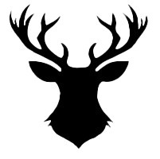

“Flavours by Papatuanuku”
A journey into cultural co-design
Flavours by Papatuanuku is an interactive project that celebrates the fusion of indigenous knowledge and modern UX design. Through collaborative storytelling and immersive experiences, it aims to honor the wisdom of Papatuanuku (Mother Earth) and the diverse cultures connected to her.
This project showcases how ethical design practices can bridge traditional narratives with contemporary digital interfaces, creating meaningful and inclusive user experiences.
Investigate Project